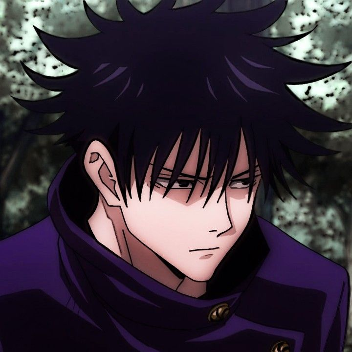

Sukuna
#001Descrição
"Rei das Maldições", Sukuna era um feiticeiro humano poderoso cuja morte o transformou em uma maldição.
Satoru Gojo
#002Descrição
Gojo é o feiticeiro mais poderoso de todos e mentor de Itadori, Megumi e Nobara.
Geto
#003
Descrição
Geto, ex-amigo de Gojo, rebelou-se contra o sistema de exorcistas e quer eliminar "não-feiticeiros".
Mahito
#004Descrição
Mahito é uma maldição sádica que personifica o ódio humano e experimenta com almas.
Megumi
#005

Descrição
Megumi, aluno de Gojo, é reservado, focado e altruísta, sempre protegendo os outros.
Toji
#006Descrição
Toji, pai de Megumi, rejeitou o clã Zenin e desenvolveu habilidades físicas sobre-humanas.